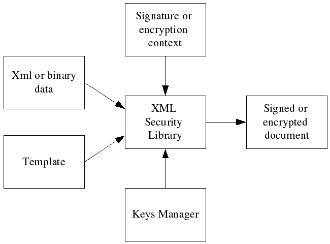

Signing and encrypting documents
Overview
XML Security Library performs signature or encryption by processing input xml or binary data and a template that specifies a signature or encryption skeleton: the transforms, algorithms, the key selection process. A template has the same structure as the desired result but some of the nodes are empty. XML Security Library gets the key for signature/encryption from keys managers using the information from the template, does necessary computations and puts the results in the template. Signature or encryption context controls the whole process and stores the required temporary data.
Figure: The signature or encryption processing model 
Signing a document
The typical signature process includes following steps:
Example: Signing a template
/**
* sign_file:
* @tmpl_file: the signature template file name.
* @key_file: the PEM private key file name.
*
* Signs the #tmpl_file using private key from #key_file.
*
* Returns 0 on success or a negative value if an error occurs.
*/
int
sign_file(const char* tmpl_file, const char* key_file) {
xmlDocPtr doc = NULL;
xmlNodePtr node = NULL;
xmlSecDSigCtxPtr dsigCtx = NULL;
int res = -1;
assert(tmpl_file);
assert(key_file);
/* load template */
doc = xmlParseFile(tmpl_file);
if ((doc == NULL) || (xmlDocGetRootElement(doc) == NULL)){
fprintf(stderr, "Error: unable to parse file \"%s\"\n", tmpl_file);
goto done;
}
/* find start node */
node = xmlSecFindNode(xmlDocGetRootElement(doc), xmlSecNodeSignature, xmlSecDSigNs);
if(node == NULL) {
fprintf(stderr, "Error: start node not found in \"%s\"\n", tmpl_file);
goto done;
}
/* create signature context, we don't need keys manager in this example */
dsigCtx = xmlSecDSigCtxCreate(NULL);
if(dsigCtx == NULL) {
fprintf(stderr,"Error: failed to create signature context\n");
goto done;
}
/* load private key, assuming that there is not password */
dsigCtx->signKey = xmlSecCryptoAppKeyLoad(key_file, xmlSecKeyDataFormatPem, NULL, NULL, NULL);
if(dsigCtx->signKey == NULL) {
fprintf(stderr,"Error: failed to load private pem key from \"%s\"\n", key_file);
goto done;
}
/* set key name to the file name, this is just an example! */
if(xmlSecKeySetName(dsigCtx->signKey, key_file) < 0) {
fprintf(stderr,"Error: failed to set key name for key from \"%s\"\n", key_file);
goto done;
}
/* sign the template */
if(xmlSecDSigCtxSign(dsigCtx, node) < 0) {
fprintf(stderr,"Error: signature failed\n");
goto done;
}
/* print signed document to stdout */
xmlDocDump(stdout, doc);
/* success */
res = 0;
done:
/* cleanup */
if(dsigCtx != NULL) {
xmlSecDSigCtxDestroy(dsigCtx);
}
if(doc != NULL) {
xmlFreeDoc(doc);
}
return(res);
}
Full program listing Simple signature template file
Encrypting data
The typical encryption process includes following steps:
Example: Encrypting binary data with a template
/**
* encrypt_file:
* @tmpl_file: the encryption template file name.
* @key_file: the Triple DES key file.
* @data: the binary data to encrypt.
* @dataSize: the binary data size.
*
* Encrypts binary #data using template from #tmpl_file and DES key from
* #key_file.
*
* Returns 0 on success or a negative value if an error occurs.
*/
int
encrypt_file(const char* tmpl_file, const char* key_file, const unsigned char* data, size_t dataSize) {
xmlDocPtr doc = NULL;
xmlNodePtr node = NULL;
xmlSecEncCtxPtr encCtx = NULL;
int res = -1;
assert(tmpl_file);
assert(key_file);
assert(data);
/* load template */
doc = xmlParseFile(tmpl_file);
if ((doc == NULL) || (xmlDocGetRootElement(doc) == NULL)){
fprintf(stderr, "Error: unable to parse file \"%s\"\n", tmpl_file);
goto done;
}
/* find start node */
node = xmlSecFindNode(xmlDocGetRootElement(doc), xmlSecNodeEncryptedData, xmlSecEncNs);
if(node == NULL) {
fprintf(stderr, "Error: start node not found in \"%s\"\n", tmpl_file);
goto done;
}
/* create encryption context, we don't need keys manager in this example */
encCtx = xmlSecEncCtxCreate(NULL);
if(encCtx == NULL) {
fprintf(stderr,"Error: failed to create encryption context\n");
goto done;
}
/* load DES key */
encCtx->encKey = xmlSecKeyReadBinaryFile(xmlSecKeyDataDesId, key_file);
if(encCtx->encKey == NULL) {
fprintf(stderr,"Error: failed to load des key from binary file \"%s\"\n", key_file);
goto done;
}
/* set key name to the file name, this is just an example! */
if(xmlSecKeySetName(encCtx->encKey, key_file) < 0) {
fprintf(stderr,"Error: failed to set key name for key from \"%s\"\n", key_file);
goto done;
}
/* encrypt the data */
if(xmlSecEncCtxBinaryEncrypt(encCtx, node, data, dataSize) < 0) {
fprintf(stderr,"Error: encryption failed\n");
goto done;
}
/* print encrypted data with document to stdout */
xmlDocDump(stdout, doc);
/* success */
res = 0;
done:
/* cleanup */
if(encCtx != NULL) {
xmlSecEncCtxDestroy(encCtx);
}
if(doc != NULL) {
xmlFreeDoc(doc);
}
return(res);
}
Full program listing Simple encryption template file
|